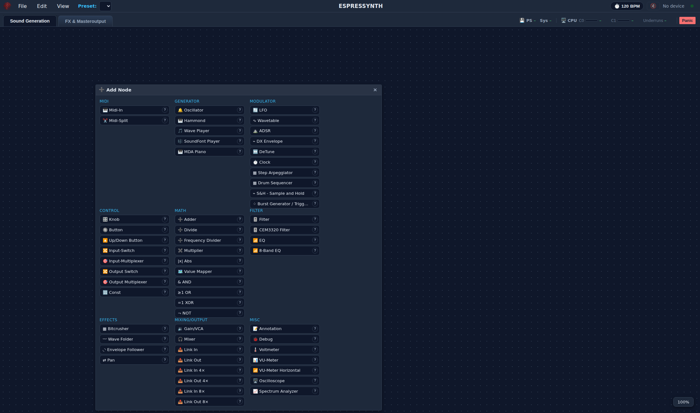
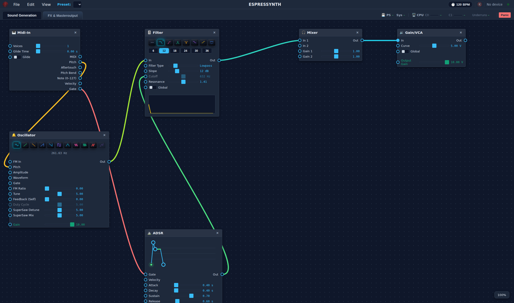
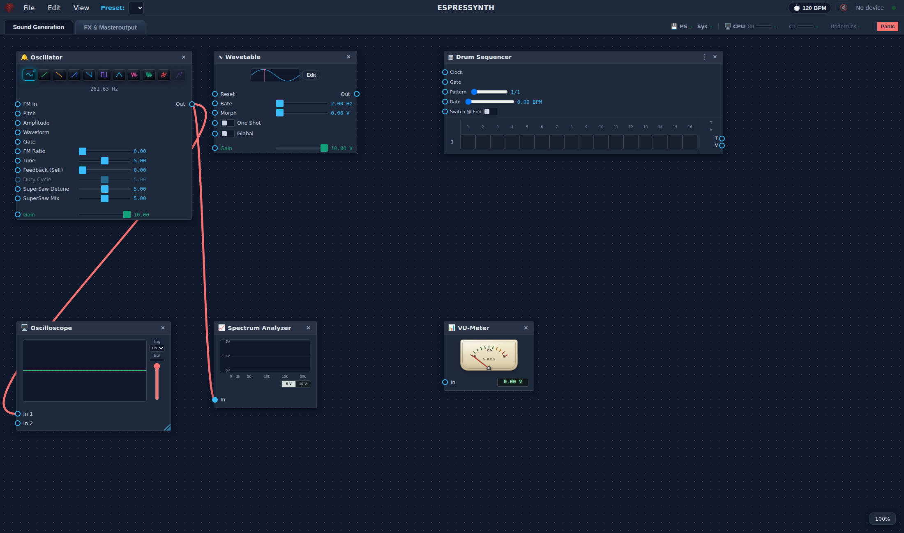

Widget-Referenz
ESPRESSYNTH ist ein modularer, Eurorack-artiger Software-Synthesizer: Man verbindet Widgets per Kabel zu einem Patch, genau wie an einem echten Modularsystem – nur eben im Browser, mit dem ESP32-P4 als Klangerzeuger. Diese Seite listet alle 69 Widget-Typen, gruppiert in die 11 Kategorien, die auch im "Add Node"-Dialog der Web-Oberfläche erscheinen.

Kategorien
So wird gepatcht
Jedes Widget hat links seine Eingänge (CV/Audio) und rechts seine Ausgänge. Ein Kabel wird gezogen, indem man mit der Maus von einem Ausgangs-Punkt (Kreis) zu einem Eingangs-Punkt eines anderen Widgets zieht – die Verbindung wird sofort aktiv, es muss nichts kompiliert oder neu gestartet werden. Die meisten Eingänge lassen sich zusätzlich direkt per Regler einstellen, solange kein Kabel gesteckt ist; sobald ein Kabel angeschlossen ist, übernimmt das CV-Signal die Kontrolle.

? neben jedem Widget im
"Add Node"-Dialog, Quelle: data/help/widgets/*.html) und bewusst auf Englisch
belassen, damit sie 1:1 mit dem Gerät übereinstimmen.
Ein paar visuell interessante Widgets
